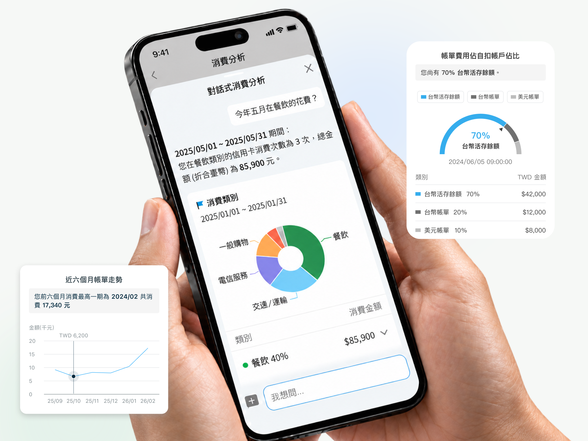

Product Designer
I work across digital banking and AI, helping people understand complex data and workflows.
Explore selected work ↓Selected Work

Finding spending with AI
Cardholders ask about spending and get answers through summaries, charts, and transaction details.
62%Less time to complete a transaction-search task in a usability test

Financial Adventure
A mobile-guided museum experience where younger visitors explore financial concepts through puzzles, storytelling, and team activities.
5experience stages
58interface screens

A prompt library for the team
A browser extension I designed and built to help designers find, customize, and reuse AI prompt templates.
View case study →.png)
Interfaces for exploring physical exhibits
A generative interactive wall and a transparent screen that lets visitors explore a motor model through touch and gesture.
View case study →